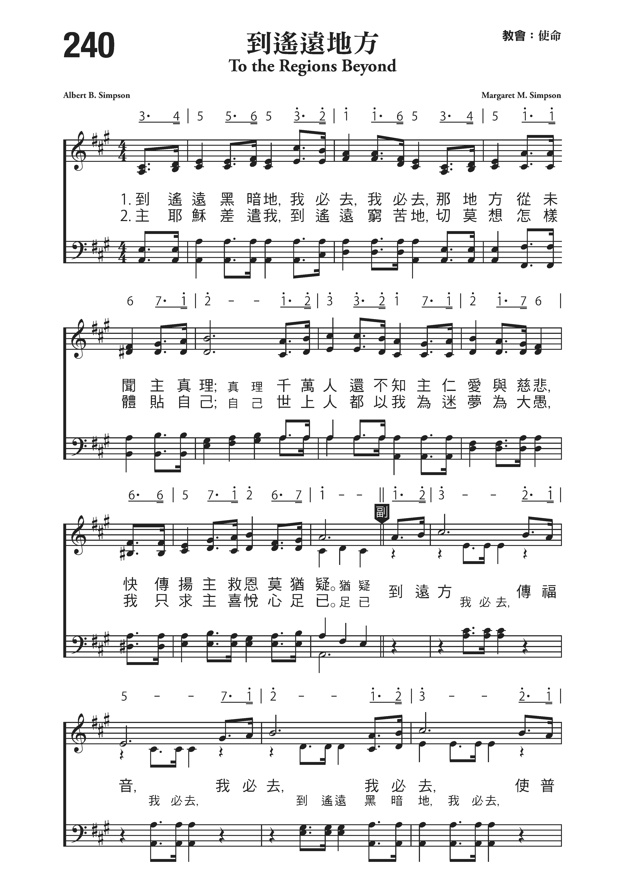

1760 To the regions beyond I must go, I must go 到遙遠地方
|
|
|
1 To the regions beyond I must go,
I must go
Where the story has never been told;
To the millions that never have heard of His love,
I must tell the sweet story of old.Chorus:
To the regions beyond I must go, I must go,
Till the world, all the world,
His salvation shall know.
2 To the hardest of places He calls me to go,
Never thinking of comfort or ease;
The world may pronounce me a dreamer, a fool,
Enough if the Master I please. (Chorus)
3 Oh, you that are spending your leisure and pow'rs
In those pleasures so foolish and fond;
Awake from your selfishness, folly and sin,
And go to the regions beyond. (Chorus)
4 There are other “lost sheep” that the Master must bring,
And to them must the message be told;
He sends me to gather them out of all lands,
And welcome them back to His fold. (Chorus)
Source: Hymns of Faith #508 |
到遙遠之地方我必去，我必去，那處從未聞福音道理，
千萬人還不知主仁愛與慈悲，急傳此嘉音勿再猶疑。
耶穌差遣我去那最窮苦之地，切莫想怎樣體貼自己，
世上人都以我為迷夢為大愚，但願主喜悅萬事足矣。
切莫偷閒遊蕩寶貴光陰拋棄，留戀於世俗無謂耍戲，
勿淫逸勿自私亟應覺悟醒起，快趕到那邊遙遠之地。
亡羊流離失所牧人慈心垂憐，此嘉音應傳諸彼耳邊，
主特遣我前往將他們齊結聯，歡迎他們歸回主羊圈。
副歌：到遠方，傳福音，我必去，我必去，
至世界，全世界，普及救恩真理。 |
|

http://pt.fuyinchina.com/m/view.php?aid=7074
http://www.sooopu.com/html/181/181982.html

https://hymnary.org/hymn/FHOP/page/407 |
| |
|
http://www.christianstudy.com/data/hymns/text/hymncampanions02/Feb/29/stream.html
開到水深之處
Launch Out
上主之慈愛猶如極大海洋，遼闊淵深無可限量；
開到水深處解脫纜離邊岸，駛入上主豐富恩海洋。
可惜有多人只站在海岸邊，浩浩大洋徒自觀看；
終不敢挺著身冒險去探索，也不願開到深水中間。
另有人嘗試只離岸不甚遠，畏懼不前停泊海邊；
濁浪與穢波瀕瀕衝此邊岸，使他們常被污水濺遍。
聖徒應開到大海洋深水處，此處纔見豐盛救恩；
駛入到上主慈愛生命海洋，就必知上主富足大能。
（副歌）
開到水深處，呵！快離開邊岸；
開到開到主慈愛大海洋，此處潮水流漲。
這首詩是宣信（A. B. Simpson, 1843-1919, 見三月九日）所作，由卡特（Russell
Kelso Carter, 見二月廿五日）譜曲
。在這首詩中，宣信鼓勵信徒在靈程上，不要老是停留在岸邊觀看，該划到水深之處，可得到更豐盛的靈命。

他另一首聖詩「到遙遠地方」（To the Regions
Beyond）由他女兒宣瑪珂（Margaret Simpson）譜曲，闡明了他的心路靈程。
到遙遠地方
To
The Regions Beyond
到遙遠黑暗地，我必去，我必去，
那地方從未聞主真理；
千萬人還不知主仁愛與慈悲，
快傳揚主救恩，勿猶疑。
主耶穌差遣我，到遙遠窮苦地，
切莫想怎樣體貼自己；
世上人都以我為迷夢為大愚，
我祇求主喜悅。心足矣。
莫隨從己心意，將光陰虛度過，
貪紅塵，迷聲色，享世樂;
勿淫逸，勿自私，應覺悟，應醒起，
趕快到那遙遠莊稼地。
另外有迷路羊主耶穌要尋找，
你必須將福音去傳告;
主差我到各地把他們聚一起，
領他們回羊欄享福祉。
(副歌)
到遠方傳福音，我必去，我必去，
使普世眾罪人，都得聞主救恩。
（可在『YouTube 』上聆聽此歌）
宣信從神學院畢業後，在長老會牧會，也得會友的愛戴；可是他仍感空虛，因此迫切尋求神的旨意。
神給了他啟示：馬太福音28:18-20傳福音的使命，他想到全世界有許多國家的人民，沒有機會聽到福音，1878年，有一天晚上，他在夢中見到千萬個中國人渴望福音的異象。他深受感動，擬辭職前往，但為妻子所阻。
1879年的元旦，神再次在異象中指示他要作宣教的工作。當他有了這個異象就不顧家庭的反對，撇下安定的生活和工作，奮身為主奔跑。
1883年3月他成立了普世宣教聯會，同年10月創辦宣教訓練學院，訓練一批肯去世界各地墾荒，向從未聽到福音的人傳道。他雖經歷痛苦，但也嚐到主的豐富，恩惠和慈愛。
1887年宣信號召所有的基督徒，不分宗派，都積極參與傳福音的事工，並成立了國際宣道聯會（International Missionary
Alliance）。1892年初，宣信到中國廣西視察，他認為宣教士必須打破語言上的隔閡，以便向當地人直接傳福音。他返美後力囑宣教士到中國後要學習中文。
1897年，他將國內和國際的宣道會合併為宣道會（The Christian and Missionary
Alliance）。嗣後，他創設了一間神學院，造就了許多甘願到遠方工作的宣教士。 他寫了許多屬靈的書藉並辦了一份屬靈的週刊。
翟輔民（R. A. Jaffray）牧師出生在加拿大一個富裕有名望的家庭，他年青時，聽到馬太福音28:18-20「耶穌進前來，對他們說，天上地下所有的權柄，都賜給我了。所以你們要去，使萬民作我的門徒，奉父子聖靈的名，給他們施洗。凡我所吩咐你們的，都教訓他們遵守，我就常與你們同在，直到世界的末了。」就參加宣道會，到中國傳道；他是聖經報的創辦人。
1924 年，他奉派去越南開墾，使當地教會大復興，教會十年內由六十五人增長到八千三百多人。
中英文聖詩集參考
英文歌名 Launch
Out
生命聖詩 371
聖詩 250
讚美 316
青年聖歌II 184
校園詩歌II 183
英文歌名 To
The Regions Beyond
生命聖詩 264
聖詩 472
讚美 447
https://www.xueshengshi.com/?p=5517
简介（一） （来源：《岁首到年终》）
到遥远地方
The Regions Beyond
A. B Simpson, 1843-1919
有永远的福音要传给住在地上的人，就是各国各族各方各民。 (启14:6)
「传福音」是基督徒神圣的本分。
在这末后的时代，更是我们紧急的任务。当魔鬼知道时日无多，加紧破坏的工作，信徒们若不趁着机会，努力多救灵魂，如何对得起为他们流血舍命的主，更如何能够促进天国早日降临呢？
叨雷博士 (Dr. Torrey)
吿诉我们，一年如有一个人得救，那个得救的人，在第二再把福音传给另外一个人；那二个人再把福音传给另外的二个人，就是这样保持着每人每年领一个人归耶稣，这样三十三年之久，全世界都要得救了。
综观现今的世界局势，主再来的脚步近了，我们应当趁着白曰，多作主工，有一颗热爱灵魂的心，顺服主的引导，传福音给「未得之民」。
本诗作者 (A. B. Simpson)
乃宣道会的创办人，据其自述何以在1881年成立宣道会之原因如下：「主给每个基督徒都有不同的托付.，我们每人都有神的呼召──只要我们有属灵的洞察力，就能分辨出神为我们安排的工作，并要忠心地完成使命。」
宣信博上终身火热事奉主，心里似乎蕴藏着一股无限的冲劲。诚如他在其随笔中所写的：「在我的一生中，没有时间容我嬉戏荒唐；因这并非救主所行的路。唯要百般辛劳，用尽每小时，每分秒，时刻为神、全然为主。」这首「到遥远地方」可反映其热爱灵魂，并愿顺服主带领，到任何遥远之地。他的名诗尚有：「祂自己」、「惟独耶稣」、「我要像祂」等。
1. 到遥远黑暗地，我必去，我必去，那地方从未闻主真理；
千万人还不知主仁爱与慈悲，传扬主救恩勿犹疑。
2. 主耶稣差遣我，到遥远穷苦地，切莫想怎样体贴自己；
世上人都以我为迷梦为大愚，我祇求主喜悦、心足矣。
(副歌)
到远方传福音，我必去，我必去，
使普世众罪人，都得闻，主救恩。
＊向全世界传福音并不是你我的一个选择，而是一个你我都当遵守的命令。── 戴德生
https://wordwisehymns.com/2015/01/14/the-regions-beyond/
Words: Albert Benjamin Simpson (b. Dec. 15, 1843; d. Oct. 29, 1919)
Music: Margaret Mae Simpson (b. April ___, 1878; d. Oct. 9, 1958)
Links:
Wordwise Hymns (Margaret Simpson)
The Cyber Hymnal
Hymnary.org
Note: Pastor Simpson’s fine missionary hymn was published in 1904. His daughter
Margaret supplied the tune.
The phrase that dominates this hymn, “to the regions beyond,” is taken from the
words of Paul in Second Corinthians.
Having hope, that as your faith is increased, we shall be greatly enlarged by
you in our sphere, to preach the gospel in the regions beyond you, and not to
boast in another man’s sphere of accomplishment. But ‘he who glories, let him
glory in the Lord’” (II Cor. 10:15-17).
Or, as J. B. Philips has it, “Our hope is that your growing faith will mean the
expansion of our proper sphere of action, so that before long we shall be
preaching the gospel in districts beyond you.”
Particularly in the Christian missionary work of the nineteenth and early
twentieth centuries, that phrase, “the regions beyond,” came to represent the
goal and passion of many servants of Christ. One of these was Canadian pastor
and missionary statesman Albert Simpson.
CH-1) To the regions beyond I must go, I must go
Where the story has never been told;
To the millions that never have heard of His love,
I must tell the sweet story of old.
To the regions beyond I must go, I must go,
Till the world, all the world, His salvation shall know.
The pages of secular history are dotted with the names of intrepid explorers who
dared to reach beyond the confines of the European continent to the shores of
what was to them a New World. Leif Erickson was apparently the first, at the end
of the first millennium, followed by Columbus (1492), Cabot (1497), Magellan
(1520), and many more.
These reached beyond the seas that bounded their own lands. Then others, later,
dreamed of even grander things. Hot air balloons enabled man to reach beyond the
bounds of earth, and Wilbur and Orville Wright pioneered flight in
heavier-than-air machines. Though it took half a century more, it was only “one
small step for a man” to climb beyond the confines of earth’s atmosphere and
eventually reach the moon in 1969.
When it comes to biblical history we can see the same thing. During the three
years He was on earth, only once did the Lord Jesus step briefly beyond the
borders of the Holy Land. But after His death and resurrection, and before He
ascended back to God the Father, Christ commissioned His followers to carry the
message of the gospel much further. “You shall be witnesses to Me,” He said, “in
Jerusalem, and in all Judea and Samaria, and to the end of the earth” (Acts
1:8).
The book of Acts is the record of how dedicated believers began to do that. Even
opposition didn’t stop the spread of the gospel. In fact, the devil rather
outsmarted himself in that. If his intention was to stir up the enemies of the
cross to stamp out Christianity, it worked in completely the opposite way. The
Bible says:
“A great persecution arose against the church which was at Jerusalem; and they
were all scattered throughout the regions of Judea and Samaria…those who were
scattered went everywhere preaching the word” (Acts 8:1, 4).
It was like trying to stamp out a fire, and having the glowing sparks fly off
and start new fires elsewhere. One of the missionaries, a converted Jewish
Pharisee named Saul (later, Paul), went on three journeys (and likely a fourth,
after the end of Acts) preaching the gospel and founding new churches around the
Mediterranean world. The hardships and cruelty he faced are graphically reported
(II Cor. 11:23-28).
Acts chapter 18 records his early ministry in the city of Corinth. Then, when
problems later developed in the church there, he wrote letters to them giving
further instruction and calling for corrective measures (the first and second
epistles to the Corinthians). It’s near the end of the second letter that Paul
speaks of his hope to get things settled in the Corinthian church so he can move
on elsewhere, “to preach the gospel in the regions [or lands] beyond you” (II
Cor. 10:16)–likely referring to western Greece, Italy and Spain.
CH-2) To the hardest of places He calls me to go,
Never thinking of comfort or ease;
The world may pronounce me a dreamer, a fool,
Enough if the Master I please.
CH-3) Oh, you that are spending your leisure and powers
In those pleasures so foolish and fond;
Awake from your selfishness, folly and sin,
And go to the regions beyond.
Questions:
1) In what areas are missionaries serving who are supported by your church?
2) Can you think of three or four ways you can encourage and help these servants
of Christ (either as a church, or personally)?
https://online.ambrose.edu/alliancestudies/ahtreadings/ahtr_s3.html
Eugene Rivard
Introduction
"ALBERT B. SIMPSON'S HYMNS ARE UNSINGABLE!" is an opinion shared by many members
of the Christian and Missionary Alliance today. Forty-four of his songs are
included in the present Hymns of the Christian Life but are rarely used
in congregational singing. Why have they fallen into disuse? Were they always
considered "unfit" to sing? Is the Alliance losing a legacy of its founder, or
is it merely allowing substandard hymnody to die a natural death?
A contemporary Alliance church-goer might well wonder if Simpson's hymns were
regarded with the same general disdain during his lifetime. If this were the
case, it would be difficult to understand why any were included in the following
edition of the society's hymnal. Were they retained solely for the depth,
intensity and call for Christian commitment in their lyrics?
The hymns do effectively reflect the
distinctive theology of Simpson and the Alliance: the Spirit-filled deeper life,
world evangelization, and the
gospel of Christ as Saviour,
Sanctifier, Healer and Coming King. This is no coincidence, since the
songs were often the poetic essence of a poignant writing or an impassioned
sermon. Moreover, the early publications of the Alliance and the writing of
Simpson's contemporaries indicate that his songs were held in great favor. Not
only were they eagerly received, but they became dear to the hearts of those who
sang them and carried them throughout the world.
The Gospel Song
The "gospel song" was the form of music most closely associated with the
revivals and evangelistic meetings of the late nineteenth and early twentieth
centuries. It is, therefore, not surprising that A.B. Simpson employed it (and
with great success) as his own musical medium. The gospel song differs from the
traditional church anthem with its focus on the individual, its lively rhythms
and tuneful, easily-remembered refrains. In addition, unlike the hymn, it is
intensely personal and immediate in nature, and is often written in the first
person as a testimony.
Since Simpson was, above all, an evangelist, he stressed the need of the
individual to respond to the will of God and saw the gospel song as an ideal
means of calling sinners to repentance, educating them in sound doctrine,
deepening their life in the Spirit and challenging them to live in a Christ-like
manner. He also considered the gospel song as the best means of expressing his
own love for Jesus Christ in music.
"What ministry today has been more honored than gospel song?" he wrote. "How God
has shown in a Bliss, Sankey or a Phillips, the honor He still will put on this
simple taste to draw millions by the power of the consecrated melody of the
gospel!"1 A.W.
Tozer wrote of early Simpson meetings where the "popular" gospel song was used:
...they joined in mass singing of old time church favorites and the recent
Gospel Songs, composed by Sankey, Bliss, Crosby and others of the gospel
musicians of the day. Popular? Sure, it was popular and it was frowned upon by
many of the sterile scribes of the synagogues, but to Mr. Simpson, the word
"popular" carried no terrors. It meant "of the people" and it was people he
was interested in...so the singing went on and the crowds loved it and kept
coming back week after week to enjoy it.2
Despite his preference for the gospel song (for largely pragmatic reasons),
Simpson never disparaged traditional hymnody because his Scottish Presbyterian
upbringing had given him a deep appreciation for its richness. Indeed, in his
preface to the first edition of Hymns of the Christian Life (1891), he
cautioned against going to the extreme of "relegating all the old hymns to the
dusty past."3 The
first Alliance hymnal included many such hymns, with Simpson's gospel songs
serving as a contemporary supplement to them.
The Music of the Simpson Songs
Simpson's musical background was not extensive. Although he attempted to learn
the violin as a youth, he was unsuccessful and never learned more than to pick
out a melody on the piano with one finger. Others provided the harmony. In spite
of this, he composed many of the melodies for his own hymns, an unusual
accomplishment for hymn-writers of the day. Of the forty-one hymns that bear his
name in the first Hymns of the Christian Life, he is credited with the
music for thirty-two. Of the 162 hymns credited to Simpson in the seven editions
of Hymns of the Christian Life, fully 119 were set to music of his own
writing.
Always a poet, he began writing hymns while a pastor at the Chestnut Street
Presbyterian Church in Louisville, Kentucky, from 1873 to 1879. He made no
pretence of being a composer of stature, as his unpolished melodies readily
confirm. They reveal, rather, an intense involvement with other business, as
well as an urgency that did not allow for careful revision. Later in his career,
Simpson relegated the melody writing to others, including his daughter,
Margaret. By that time, the first hymn tunes had become so closely associated
with the Alliance that they could never be changed. Often his daughter was
called at the spur of the moment to help him with a song. Long after his death,
she recalled some of the songwriting methods her father had used:
...he used to call me often and say, 'I have a message for you for my
sermon tomorrow. Meet me at the piano soon.'...there we labored together till
he was satisfied it carried his inspiration. Sometimes he would say, 'Here,
take this. I can't do a thing with it, but this is what I want.' And where it
was crescendo [loud], he would demonstrate it by singing out loudly enough to
be heard down the hill, with obvious punctuations and emphasis. When you
grasped his idea, he would glow with ecstasy and say, 'You've got it, there,
that's fine.'4
Several songwriters were used to set his texts to music. J. H. Burke, Minister
of Music at the New York Gospel Tabernacle from 1889-1891, is credited with many
melodies for Simpson's words, including his best-known lyric, "Yesterday, Today,
Forever." Others included the Methodist teacher/author Captain Russell Kelso
Carter, co-editor of the first Alliance hymnal and an associate of Simpson in
the conventions and at the Gospel Tabernacle; James Kirk, a member of the "Ohio
Quartet" which sang at the Old Orchard (Maine) missionary conventions; Louise
Shepherd, soloist at Old Orchard and member of the Missionary Training Institute
faculty from 1897-1899; May Agnew Stephens, pianist and songleader of the Gospel
Tabernacle; Winfred Macomber, Missionary Training Institute graduate and
missionary to the Congo; and George Stebbins, associate of Moody and Sankey, who
was commissioned to set some of Simpson's poetry to music for the 1936 hymnal.
Musical Difficulties
There is no doubt that some of the music to which Simpson's hymns were set,
whether written by himself or others, was difficult to sing. The early Alliance
overlooked these problems and probably developed their own traditional ways of
rendering the songs. Later generations were not as generous.
Perhaps the most widely quoted critic of Simpson's hymns was A.W. Tozer, who
wrote, "...it is in the music that his songs suffer the most. A few of his
compositions can be sung, but the most of them can be negotiated by none except
trained singers."5 While
Dr. Tozer's credentials as a music critic have been questioned, it is true that
some of the tunes present irksome rhythmical and melodic problems.
For a hymn to be sung well by a congregation, several musical factors need to be
considered. First, the range cannot be too great, as the average church-goer
cannot generally sustain high pitches for long. Second, the rhythms of the
melody must match the rhythms of the words. The phrases must be balanced and
stressed syllables fall on the stressed beats (ex. "O God our help in ages
past"). The words cannot have too many syllables if they are to lend
themselves well to simple melodies. Third, the melody must be tuneful with few
large jumps, easily remembered without being trite. Fourth, the hymn cannot be
too long, and finally, the music must express the mood of the text. Hymn-writers
are well aware of the intense amount of work needed to fulfil these
requirements. Furthermore (in common evangelical performance practice), all four
parts are usually sung, making good harmony another musical consideration. If
the music has problems in any of these areas, the congregation will have
difficulty singing, no matter how profound the words may be.
The music of some of Simpson's hymns fell short in one or more of these areas.
Attempts were made to revise and re-harmonize much of the original music of his
songs in the 1936, 1962 and 1978 Alliance hymnals, but some of the tunes still
require complete rewriting to become more acceptable to today's musical tastes.
Only the Simpson hymns in the latest (1978) hymnal were considered in the
analysis that follows, because the others are not widely used today. All numbers
shown are from this hymnal. Not all have great difficulties.
"Thy Kingdom Come" (472),
"I Take, He Undertakes" (290), and
"Step By Step" (349)
are as "singable" as any of the tunes of other 19th Century songwriters. Other
Simpson tunes, while not great music, can prove, with repeated use, to be as
acceptable as that of any gospel song. Alterations as simple as lowering the key
have saved some songs from oblivion. "I Take, He Undertakes," among others, has
been lowered since its original appearance in 1891.
Rhythmic and metrical problems mar some of Simpson's hymns. Gospel songs
characteristically contain a great number of words in a verse and have a quick
tempo, making it imperative that the syllables match the rhythm of the tune.
"The Joy of the Lord" (280) is
one of the most popular and triumphant hymns in the Alliance tradition, but many
congregations will trip when they get to the middle of the third verse--"like
the nightingale's notes it can sing in the darkness." This beautiful imagery is
lost when "the" receives a stressed beat rather than the more open and important
syllable "night" in "nightingale."
"Launch Out" (259) challenges
believers to experience the supernatural provision of God if they will only step
out in His name. However, many congregations will find it difficult to sing the
words in measure three: "boundless and fathomless" because the musical rhythm
does not logically follow the natural rhythm of the words. As a result, the
instrumentalist will be playing something other than that which the congregation
is singing, and unless practised, the congregation will stumble. Even such small
problems may cause a congregation to quickly judge a hymn "unsingable."
"I Will Say Yes to Jesus" (217)
expresses unreserved consecration to Christ, but the first verse is very
difficult to sing because of its rhythmic discrepancies. The opening two
measures are in fine rhythmic agreement, but when the words "oft it was no
before" are sung, it is obvious that "oft" should have been placed on a strong
beat rather than "it," and that perhaps "oft it was no" should have matched the
rhythm of "I will say yes" in the first measure. This discrepancy not only
causes a "hitch," but is followed too quickly by the next phrase, giving the
congregation and songleader no chance to recover. In fact, the entire first
verse allows the singer no opportunity to recover because it is so filled with
words that the singer can hardly take a breath. Moreover, the syncopated rhythm
of the melody on "ever" of "whatever" at the verse's end, constitutes an
unexpected and illogical break in the rhythmic pattern and provides yet another
stumbling block. A loyal congregation with a strong songleader could sing this
song effectively with much repetition, but most will not try a second time.
Rhythmic problems and forgettable melodies certainly characterize Simpson's
lesser-known hymns, but his well-known ones present some phrasing problems as
well. "Search Me O God" (239) is
a beautiful hymn of consecration, but the chorus has two measures too many. The
entire song consists of a pattern of balanced four measure phrases, but ends on
an unbalanced phrase of six measures that requires an unusual hold on the "away"
of "cannot pass away." Such lack of balance invariably makes the congregation
feel ill at ease because they can sense the lack of synchronization between the
lyric and the melody. "Christ in Me"
(166) is a tremendous statement of love for Jesus Christ and a testimony
to the joy and hope that Christ is to us, but the melody on the refrain rambles
without a clear musical or poetic phrase, and seems to end twice before the
final measure.
Here it must be mentioned that although Simpson's gospel songs contain
potentially life-changing truth, they are often too long. Most of the hymns in
an average hymnal take three minutes or less to sing. Some of Simpson's
compositions take five minutes or more, thereby straining an untrained voice,
especially when the songleader urges the people to "sing out" all the way
through. The songleader must therefore lead judiciously, leaving out the refrain
at the end of one or more verses or using other creative means to avoid vocal
strain on the part of the congregation.
The final consideration in this condensed musical critique concerns the style of
Simpson's music. Simpson wrote almost all of his in march style, as did most
contemporary gospel song writers. Simpson found this style well-suited to the
intention of the missionary society, viz. to march throughout the world with the
"banner of Christ held high." In an age of nationalism and imperialism, the
imagery of war, battle and victory was easily understood and spiritualized.
Titles like "I Have Overcome," "Be True," "Go and Tell," "Go Forward," "Fill up
the Ranks," "Jesus Giveth Us the Victory," "March On," "Christ is Conqueror,"
"Hallelujah," "Burn On," "Launch Out," "To The Regions Beyond," and "Send the
Gospel Faster," were set to suitably aggressive music. Even the hymns that told
of the person of Christ or the Deeper Life were set to melodies with march-like
beats. "Himself," "The Joy of the Lord," "Jesus Only," "I Will Say Yes to
Jesus," "I Want To Be Holy," were all written to stimulate rather than to
soothe.
A.W. Tozer attributed most of this aggressive style to Simpson's close musical
associate, R. Kelso Carter. He wrote that Carter's tunes, "while marked with
traces of superior gift, were nevertheless too militant and boisterous for the
average Christian to enjoy."6 J.
H. Burke could be accused of the same thing. He is responsible for the most
disastrous combination of music and words in the present hymnal,
"A Missionary Cry," which is the
theme song of the Alliance. Although the lyrics express the deepest and most
solemn desire of Simpson's heart, the melody is in a major key and is as lively
and happy as any Disneyland march. The song begins with the words,
"A hundred thousand souls a day
are passing one by one away"
but by the time the singer reaches the refrain
"they're passing to their doom"
it sounds more like joyous proclamation than solemn reflection. Militant themes
and march-like tunes have gone out of fashion and do not appear in the works of
today's peace-conscious songwriters, all of which suggests that the melodies of
a bygone era may be a hindrance to using Simpson's compositions effectively in
the church of the late twentieth century.
The Words of Simpson's Gospel Songs
Despite musical and stylistic problems associated with A.B. Simpson's gospel
songs, many Alliance members grew up singing them and found them uplifting. One
of these was A.W. Tozer, who at the end of his critique of Simpson's music,
writes:
After saying all this, I would yet confess that hardly a day goes by that I
do not kneel and sing in a shaky baritone comfortably off key, the songs of
Simpson. They feed my heart and express my longing, and I can find no other's
songs that do this in as full a measure. While not many have gained wide
popularity it is my sober judgement that Simpson has put into a few of his
songs more of awful longing, of tender love, of radiant trust, of hope and
worshp and triumph than can be found in all the popular gospel songs of the
last hundred years put together. Those songs are simply not to be compared
with his. Simpson's songs savor of the Holy of Holies, the outstretched wings
of the cherubim and Shekinah glory. The others speak of the outer court
and milling crowd.7
One can catch the vision of A.B. Simpson, his honesty, depth and fervor for
Christ in the words of his hymns. "The essence of Simpson's hymns is not in the
music but in the words,"8 Tozer
wrote.
Most of Simpson's hymn texts are actually outlines of sermons he had preached,
or condensed thoughts from articles he had written. His congregation would sing
these hymns before or after he preached the sermons which inspired them, thereby
reinforcing the points he had made. Simpson was a powerful preacher, eloquent in
style and delivery, and he used poetry well in his sermons. His poetry grew out
of a writing style that often began in point form, much like a sermon. He would
make an opening statement and begin to expound upon it, ever building in
intensity, expanding and developing a thought or scriptural truth until it
"overflowed" into a more concentrated and expressive means of communication:
poetic verse. The verse he chose would be the logical culmination of the
thought. The pamphlet "Himself"9 is
an example of this style of writing as well as the "Joyful Life" chapter of his
book, A Larger Christian Life.10 "The
Joy of the Lord" is the distillation of this chapter [actually a sermon] and
verses from the hymn are quoted throughout it.
Simpson's hymns expressed the deepest desires of his heart. May Agnew Stephens
wrote about this in her memorial tribute:
He was a prolific writer of hymns but none were [sic] mechanical. They all
came from a hidden fire and bore a definite message. And none ever satisfied
him unless they expressed the full scope of the fourfold gospel. Especially
the hope of the return of our Lord he felt must be added to every hymn of
salvation or service, if at all possible, and he often commented on the
failure of many a gospel song to carry its message to the highest point--the
coming of Christ.11
Simpson had not always used music extensively in his services. He first became
convinced of the effectiveness of using music as an evangelistic tool in 1894,
when he was pastor of the Chestnut Street Presbyterian Church in Louisville,
Kentucky, a city still divided from the American Civil War. He joined with other
local pastors in inviting evangelist Major Daniel Whittle and gospel singer
Phillip Bliss to hold a campaign in their city. The singing of Bliss "convinced
Mr. Simpson of the wisdom of giving a large place to the ministry of song, and
in all his subsequent work, not only chorus and congregational singing, but
solos were special features."12
Bliss influenced evangelist D.L. Moody in the same way: "...according to their
mutual friend, D.W. Whittle, Bliss crystallized Moody's sense of the power of
singing in gospel work."13 Gospel
music was meant to stir people, convict them of sin, show them the beauty of
Jesus, invite them to receive Him as Saviour and praise Him with full voice.
Many people were moved more by the music than the preaching, and those whom the
preaching convicted, the music moved to action.
As far as the subject matter is concerned, the most distinctive of Simpson's
hymns treat the Fourfold Gospel, the deeper Spirit-filled life, divine healing
and world missions.
The Fourfold Gospel is encapsulated effectively in the hymn "Jesus Only." This
hymn is instructive as well as devotional, and was used to teach the new
Alliance that Jesus is Saviour, Sanctifier, Healer and Coming King. "Jesus Only"
reveals Simpson's deep personal love for Christ as well. The title may have been
derived from the opening statement delivered at his first sermon in the Chestnut
Street Church in December, 1873.
In coming among you, I am not ashamed to own this as the aim of ministry
and to take these words as the motto and keynote of my future preaching:
'Jesus only.'14
The same hymn was printed in its entirety on the front cover of the special
memorial issue of the Alliance Weekly shortly after his death in 1919.
"Jesus Only" truly was the motto
of A.B. Simpson's life.
- Jesus only is our message,
Jesus all our theme shall be.
We will lift up Jesus ever,
Jesus only will we see.
- Jesus only is our Saviour,
all our guilt He bore away.
All our righteousness He gives us,
all our strength from day to day.
- Jesus only is our Sanctifier,
cleansing us from self and sin.
And with all His Spirit's fullness,
filling all our hearts within.
- Jesus only is our Healer,
all our sicknesses He bears
and His risen life and fullness,
all His members still may share.
- Jesus only is our power,
He the gift of Pentecost.
Jesus, breathe Thy power upon us,
fill us with the Holy Ghost.
- And for Jesus we are waiting,
listening for the Advent call;
But 'twill still be Jesus only,
Jesus ever, all in all.
Refrain:
Jesus only, Jesus ever,
Jesus all in all we sing;
Saviour, Sanctifier and Healer,
Glorious Lord and Coming King.
"Jesus Only" was included in the very first Alliance hymnal in 1891 and remains
one of the most distinctive songs of the denomination.
"Himself" is the other Simpson
hymn that encompasses the theology of the Christian and Missionary Alliance.
Although Simpson wrote many books and articles, and preached fervently on each
truth contained in "Himself" and "Jesus Only," it was through singing that the
Alliance affirmed, memorized and endeared them to their hearts. The tract
"Himself" contained the entire song at its conclusion. Both song and tract were
broadly distributed and Simpson reported in an editorial on October 6, 1893,
that on his recent world tour, "the hymn 'Himself'" was met with by its author
in almost all of the countries he visited, and was being sung in the languages
and homes of those heathen people."15 A
further testimony to this hymn's popularity can be seen in an incident recalled
by May Agnew Stephens:
At the Old Orchard Convention many years ago, the convention soloist sang a
number of times from manuscript: 'Once it was the blessing, now it is the
Lord," etc. In the audiences sat a clever pirate, pencil in hand, and before
the convention was over, it had been taken down and printed unknown to Dr.
Simpson and was being sold; and it was with some difficulty rescued from its
unlawful promoter.16
Its message is direct and appealing:
- Once it was the blessing, now it is the Lord;
Once it was the feeling, now it is His Word;
Once His gift I wanted, now the Giver own;
Once I sought for healing, now Himself alone.
- Once 'twas painful trying, now 'tis perfect trust;
Once a half salvation, now the uttermost!
Once 'twas ceaseless holding, now He holds me fast;
Once 'twas constant drifting, now my anchor's cast.
After three more verses, the refrain echoes the same sentiments as "Jesus Only":
All in all forever, Jesus will I sing,
Everything in Jesus, and Jesus everything.
Lyrics of a general and inoffensive style certainly do not characterize
Simpson's songs. He assumed that those who sang his songs desired the deeper
Spirit-filled life as much as he, and that by singing them, the singers would be
able to testify to that desire. Who could sing the words to
"Burn On!" without meaning them?
- O fire of God begin in me,
Burn out the dross of self and sin.
Burn off my fetters, set me free,
And make my heart a heav'n within.
- Burn in, O fire of God, burn in,
Till all my soul Christ's image bears
And every power and pulse within,
His holy heavenly nature wears.
"Breathing Out and Breathing In"
uses the graphic imagery of the Holy Spirit as the very life-sustaining air we
breathe, necessary for existence:
- Jesus breathe Thy Spirit on me,
teach me how to breathe Thee in.
Help me pour into Thy bosom
all my life of self and sin.
I am breathing out my own life,
that I may be filled with Thine,
Letting go my strength and weakness,
breathing in Thy life divine.
These are not vague or superficial requests. One of the distinctives of Simpson
hymns is that they require action, not mere intellectual assent.
"I Will Say Yes to Jesus" is no
hymn for the uncommitted Christian:
- I will say "yes" to Jesus,
oft it was "no" before,
As He knocked at my heart's proud entrance
And I firmly barred the door.
But I've made a complete surrender
and given Him right of way,
And henceforth it is always "yes"
Whatever He may say.
- I will say "yes" to Jesus
to all that He commands;
I will hasten to do His bidding
with willing heart and hands,
I will listen to hear His whispers
and learn His will each day,
And always gladly answer "yes"
Whatever He may say.
Other hymns appearing in the early hymnals had an urgency that told of Simpson's
own burning desire to deepen his life in Christ, growing and making himself
available for God's service. "Anywhere Everywhere," "I Want To Be Holy" and
"Search Me, O God" are hymns requiring action and deep commitment.
Many of Simpson's hymns were written to encourage believers already living the
deeper life. "Burn On" was one of the several hymns written especially for Nyack
Missionary Training Institute graduates, calling on the "fire of God" to cleanse
and prepare them for service. "Be True"
was the first of these graduation hymns, written for the 1894 class in
the "call and answer" style:
- We are going forth from the school of Jesus,
we have sat at His blessed feet;
We have drunk from truth's celestial fountain,
we have tasted its honey sweet.
We are witnesses for our blessed Master
in a world where friends are few;
And He sends us forth with the watchword holy,
whatsoever it costs, be true.
Refrain:
Be true (We'll be true) Be true (We'll be true)
Let the holy watchword ring,
Be true (We'll be true) Be true (We'll be true)
Be true to your glorious King.
Be true (We'll be true) Be true (We'll be true)
Whether friends be false or few.
Whatsoever betide ever at His side
Let Him always find you true.
Simpson's songs of healing are no less lacking in intensity or commitment. He
desired to help other Christians to realize the same truth he had experienced,
and was sorrowed at the rejection of this trust by some and the inability of
others to step out and claim Christ's healing by faith. The hymn with the most
pathos in this regard is "Stretch Forth
Thy Hand." It is a hymn that exhorts believers to exercise faith, to
reach out and touch Jesus as the sick did in His day:
- When Christ of old with healing power
Went forth through all the suffering land
His word so oft was wont to be
"Stretch forth thy hand, stretch forth thy hand."
And though the palsied arm might shrink
And tremble at the strange command
The healing touch was only felt
While stretching forth the withered hand.
Refrain:
O suffering one, stretch forth your hand
Upon His promise take your stand
At His command stretch forth your hand
And Christ shall make you whole.
Although many of Simpson's hymns are testimonial in nature, he intended them to
be instructive as well. "Step By Step,"
"Only Wait," "The Joy of the Lord," "Power From on High" and "My Grace Is
Sufficient for Thee" are all examples of songs of faith meant to instruct
believers in their walk with Christ. Though the words of exhortation could be
fiery, they could also be tender.
Simpson believed the Christian had been saved to live life in obedience to God,
an obedience that would issue in the spreading of the gospel to the world. He
deeply desired the Lord's second coming and was convinced that Jesus would not
come again until the world had first heard the gospel (Mark 13:10). His greatest
ambition was to spread that gospel so that the Lord would return. The first and
sixth verse of "Go and Tell Them"
(1978 hymnal) carries this message:
1. Send the Gospel of salvation
To a world of dying men,
Tell it out to every nation
Till the Lord shall come again.
6. Give the gospel as a witness
To a world of sinful men,
Till the Bride shall be completed,
And the Lord shall come again.
The third verse of "A Missionary Cry"
expresses his vision with the same urgency:
The Master's coming draweth near;
The Son of Man will soon appear;
His Kingdom is at hand.
But ere that glorious day can be,
The gospel of the kingdom we
Must preach in every land,
Must preach in every land.
He wrote missionary songs to inspire those at home and to encourage those
abroad. Hymns about exotic places like
"The Dark Soudan,"
"Beautiful Japan," "In the Land of the Congo" endeavored to impart his
vision for the millions who were without a Saviour in those foreign lands.
"Go and Tell Them," "Who Will Go?," "To the Regions Beyond," "Send the Gospel
Faster" were sung with great zeal by the early Alliance. In February,
1889, writing on the subject of missions, Simpson declared:
One hundred thousand souls are dying without Christ every twenty-four hours
in heathen lands. What are we doing to save them? American Christians are
giving on an average, one cent a week for mission and sending one Christian in
every ten thousand to save them.17
A short while later, this declaration became a hymn,
"A Missionary Cry":
1. One hundred thousand souls a day
Are passing one by one away,
In Christless guilt and gloom.
5. ...O Church of Christ what wilt thou say
When in the awful judgment day
They charge thee with their doom?
"A Missionary Cry" was possibly the first hymn Simpson ever wrote.18 He
wrote it while still in Louisville, but its first publication was delayed until
1891, when his new Hymns of the Christian Life was published. He wrote it
with the intention of stirring believers to action, rather than soothing their
consciences and his intention was fulfilled. Many a farewell service included "A
Missionary Cry" as part of the program. At one such service in August, 1891,
Simpson spoke after the hymn had been sung:
The hymn that has been sung is my heart's desire and thought for everyone
of you to realize: that with every breath I draw, a soul unsaved is passing
into the presence of God and accusing someone of neglecting its salvation.
There is no subject that so overawes me and overshadows me with its solemnity
as this.19
One night, while still a young pastor, he had a vivid dream of a desperate and
lost people, mostly Chinese, mutely wringing their hands and looking imploringly
to him for the hope of salvation. This dream so moved him that he sought to go
to China as a missionary. Although unable to go, he nevertheless carried to his
death the vision of evangelizing the unsaved of the Orient. The hymn,
"A Macedonian Cry," was inspired
by that dream:
- A cry is ever sounding upon my burdened ear
A cry of pain and anguish, a cry of woe and fear.
It is the voice of myriads, who grope in heathen night
It is the cry of Jesus to rise and send them light.
Refrain:
O hear the pleading message from every land and nation
O haste and send the answer, ye heralds of salvation
'Come over, come over,' I can hear it every more
'Come over, come over, come over and help us.'
Simpson made the emotional pitch of his missionary songs intentionally high. The
1897 hymnal contained many such missionary songs, but none was so moving as
"Only a Little Baby Girl." This
song was the direct result of an experience he had had on a trip to China in
1893. He actually saw the body of a baby girl floating in the river near some
houseboats, ignored by the people nearby. When he asked why no one had tried to
save the girl, he was confronted with the Oriental philosophy of "fate." It was
her "fate" to drown, and no one wanted to "interfere." Had she been a boy, they
might have tried to prevent the death, but since she was only a girl, she was
abandoned to drown.
Shaken by this and other similar experiences in "heathen" countries, Simpson was
stirred to write an account in the June 23, 1893 Christian Alliance Weekly,
and later, a poem in the August 25th edition. The poem was set to music and
appeared in the 1897 hymnal. Verses 1 through 5 describe the hopelessness of the
situation, and verse 6 concludes with an especially heart-rending challenge:
Only a little baby girl dead by the river side;
Only a little Chinese child drowned in the floating tide;
But it has brought a vision vast,
dark as the nations' woe;
Oh, has it left one willing heart, answering "I will go?"
How many answered that call? One who did was missionary Alice Landis. She
recalled the pathetic hymn when she encountered the same cruelty and death in
China in 1901. Her experiences were much the same as Simpson's, and she quoted
the song in an impassioned report in the November 30, 1901 Christian Alliance
Weekly.
Hymns of the Christian Life
There have been seven editions of Hymns of the Christian Life since the
first in 1891, each distinct in purpose and content.
The preface of the first hymnal states its purpose:
The musical taste of our day is in a state of transition. Beyond
controversy, the people will have new tunes and hymns that move in a more
spirited time than those our fathers sang....Between the Scotch Psalter and
the Salvation Army Song Book, there is a wide stretch of territory in which
the careful explorer will find much that is good, and possessing that
rare quality, endurance....with the belief that a book has been at last
prepared that is fully suited for a modern church hymnal, and at the same time
adapted to the needs of the prayer meeting, and general gospel work, we
present Hymns of the Christian Life for the service of our common Lord
and Saviour, praying His blessing upon it for His name's sake.20
The publishers and editors were A.B. Simpson and R. Kelso Carter.
Hymn requests were solicited from members throughout the country before the
first Alliance hymnal was compiled. With "cautious optimism" Simpson announced
its release in August, 1891:
We have received the first copies of our new hymnal, and we are sure that
our readers will agree with us that it is at least cheap. It is as large as
most of the church hymnals which cost a dollar or more, and yet it is offered
at the low price of fifty cents.21
By September, 1891, it had been introduced at the Old Orchard Missionary
Convention, and the review was more confident: "We are gratified to find that
all who have examined it are much pleased with Hymns of the Christian Life,
and it is beginning to be circulated somewhat widely."22
In the May 18, 1892 magazine, Simpson reported "highest approval" of the new
hymnal, and in December 22, 1893, eighteen months after its release, he
announced that "they [the office] were receiving testimonies from all directions
of the high appreciation with which many of the hymns have been received."23 Simpson
noted at the same time that "a good many" of the hymns were being republished in
Great Britain and he trusted that God would send them "over the world as
messages of His grace and Love."24
The formal introduction of each of these new hymnals usually took place at the
Old Orchard conventions in August, and they were well received by all reports.
The new hymns by the founder were especially popular, being sung by both special
musicians and congregations. Simpson wrote the following about the 1897
convention:
One of the most delightful additions to the Convention was the introduction of
our hymn book, which was received with universal favor and gave a pronounced
inspiration to the service of song, which was better than any previous
conference.25
The early Alliance identified strongly with its hymnody and its distinctive
hymnal. No other hymnal was so tailored to the theology of the Alliance as was Hymns
of the Christian Life. Several smaller, more specialized Alliance songbooks
have been compiled, but Hymns of the Christian Life still represents the
main body of Alliance hymnody. The first hymnal contained 455 hymns and was
subtitled, "New and Standard Songs for the sanctuary, Sunday schools, prayer
meetings, mission work and revival services." It included forty-one Simpson
hymns, the greater part of which dealt with sanctification, joy and peace. This
hymnal did not include a section specifically identified as "Missions," although
"A Missionary Cry" and "Who Will Go?" were included, as was "Trust," one of
Simpson's first Missionary Institute graduation songs.
The second hymnal, Hymns of the Christian Life #2 was published in 1897.
Seventy-two of the 385 hymns credit Simpson with either words or music. Nine of
these seventy-two were carried over from the first hymnal, and eighteen were
classified "Work and Missions" hymns. The missionary zeal of that particular
stage of Alliance growth is represented by the significant inclusion of
forty-seven songs in the "Work and Missions" category. Here was the first
appearance of "The Dark Soudan," "Beautiful Japan," "The Land of the Congo," and
the plaintive "Only a Little Baby Girl."
Seven years later, in 1904, Simpson announced that the need for a new hymnal had
been fulfilled, and that this latest hymnal had an "unusual number of new
pieces" with a "richer blessing to the household of faith than even the previous
numbers, which have been so widely used."26 The
subtitle for Hymns of the Christian Life #3 read: "For church worship,
conventions, evangelistic services, prayer meetings, missionary meetings,
revival services, rescue mission work and Sunday School." Simpson had written
the text for sixty-two of its 270 hymns, and composed a tune for "Not I, But
Christ." Most of these were new, and only seven had appeared in either of the
first hymnals. More than half of them fell into the categories of "Deeper
Christian Life" or "Christian Work and Missions." Simpson proudly wrote that "no
other book contains so many mission hymns,"27 and
it was the first to contain the well-known hymn, "To the Regions Beyond."
Margaret Simpson's name appears more often in this hymnal as well; she is
credited with the music for forty-eight hymns.
The fourth hymnal, Hymns of the Christian Life #1, 2 and 3, was published
in 1908, and remains the "magnum opus" of Alliance hymnals, containing 946
selections. These were compiled from the first, second and third editions,
although four new Simpson songs were included. In an editorial comment in the
August 1, 1908 Weekly, Simpson wrote of the new hymnal:
It is being rapidly adopted in the various states, districts and branches as the
permanent hymnal of the Alliance work, so that every member should have a copy,
and there is little prospect of any change for many years to come.28
The long subtitle of Hymns #3 was retained, but the largest section of
hymns (161) was devoted to "Salvation and Invitation." The 1908 hymnal contained
154 of Simpson's songs. Of these, most had to do with salvation and invitation,
Christian work and missions, trial, trust and comfort, deeper life and the
Lord's coming. Five of his hymns appeared for the first time, including "Launch
Out," which was retained in the following three editions.
This 1908 hymnal was the standard denominational hymnal until 1936, when the
fifth edition was published. David J. Fant, one of the editors of the hymnal,
recalled that "a new singing era had been introduced by Billy Sunday and Homer
Rodeheaver,"29 [because
of their revival and crusade songs] and in response to this change, the Alliance
Board of Managers asked him to prepare a replacement for Hymns of the
Christian Life #1, 2 and 3, containing some of this type of music. Neither
the 1936 edition nor the succeeding hymnals included an identifying number in
their title. The 1936 hymnal contained 504 hymns, fifty-seven of which were
Simpson's. Five of these were poems which had been posthumously set to music.
(See appendix.) The subtitle of the 1936 revision was less pretentious than the
last two: "A Book of Worship in Song, emphasizing Evangelism, Mission and the
Deeper Life." Several Simpson hymn tunes had been rewritten, adapted or
arranged. The "Evangelism" section, listed under "Evening Service" was the
largest category, containing 130 hymns, thirty by Simpson. Only nine of
Simpson's mission hymns were included among the considerably decreased total
number of missionary songs.
For twenty-six years, the 1936 hymnal was the official songbook of the Alliance.
In 1962, the sixth hymnal was published. Much more sophisticated than the
earlier editions, this one included cross-referenced indexes and reference
guides. There were 566 hymns, fifty-one of which were Simpson's. Harmonic
changes were again made in an attempt to appeal to contemporary worshippers, and
few of his hymns remained unchanged, with original words and music. Twenty-three
Simpson hymns appear under the categories "Consecration, Sanctification and the
Deeper Life," "Divine Healing," and the "Overcoming Life," but only seven of his
missionary hymns are included. The 1962 edition used some Simpson hymns from
earlier hymnals which the 1936 edition did not include. As well, a new hymn
"Jesus Interceding," with music by J. Buchanan MacMillan was published; it was a
poem which had never been set to music in Simpson's lifetime.
The most recent Hymns of the Christian Life is the seventh hymnal by that
title, and was published in 1978. It contains 612 hymns, forty-four of which are
attributed to A.B. Simpson. "Not I, But
Christ" remains the sole hymn for which he composed the tune only. This
hymnal includes greatly expanded indexes, scripture readings and worship aids,
making it the most sophisticated Alliance hymnal to date. Four Simpson hymns
appear in the 1978 which were not included in the 1962 hymnal, and ten which
were in the 1962 edition were not selected for the present one. Ten of his hymns
fall into the "Deeper Life"
category, six each into the categories
"Divine Healing," the "Overcoming Life," and "Missions," and the rest are
evenly distributed. Of the forty-one Simpson hymns which were printed in the
very first hymnal, fourteen remain in the 1978 edition. Of these fourteen, only
"Himself" and "I Will Say Yes to Jesus" still appear with the original,
unrevised music.
In all of the seven Alliance hymnals, Simpson received credit 162 times for
words, 119 times for both words and music, and six times for music only. Many
others of his hymns were published in Alliance magazines and elsewhere during
his lifetime, but were not selected for the hymnals.
Probably the last hymn he wrote before his death was one entitled
"The Upward Calling," and it
appeared as a tribute in the 1945 (Nyack) Missionarian. It was set to
music by his daughter, Margaret, but was never distributed. The words depict
clearly the Christian's final meeting with Jesus, coming from a man who had
looked forward to that meeting all of his life.
1. A voice is calling me, a hand has grasped me;
By cords unseen my soul is upward drawn;
My heart has answered to that upward calling;
I clasp the hand that lifts and leads me on.
4. And in my heart I hear the Spirit's whisper;
"The bridegroom cometh, hasten to prepare;"
And with my vessels filled and lamps all burning;
I'm going to meet Him in the air.
The Effect of His Music
Did the hymns of A.B. Simpson truly inspire people, or did those who sing them
do so merely out of courtesy to a prominent spiritual leader? May Agnew Stephens
wrote:
If it were possible to marshal together all the people to whom Dr.
Simpson's hymns have been an inspiration and a blessing, what a mighty host
they would be! All around the world they have carried their sweet fragrance;
into the jungles of Africa and India, China, Japan, Palestine, Europe, South
America and the islands of the sea.30
A.W. Tozer emphatically stated that the songs of Simpson "became a powerful
factor toward the success of the Christian and Missionary Alliance."31 Yes,
he did inspire people with his music.
He wrote hymns of instruction, hymns of challenge, hymns of testimony and of
great longing. He wrote hymns of the Fourfold Gospel, hymns that called for a
filling of the Holy Spirit, hymns of healing and of missions. He wrote hymns
that delighted in the beauty of the person of Jesus Christ. He presented a call
to holiness, urged people to replace the self life with the Christ-life, showed
the hopelessness of the lost world and encouraged believers to sing of the hope
of Christ's return. He wrote hymns of Christ's sufficiency and the scope of His
love, writing not merely for one denomination, nor for his own sphere of
influence, but for the universal priesthood for all believers. He wrote of his
vision, and continually directed attention to Christ. He wanted the faithful to
sing about their faith and to sing heartily.
Are Simpson's hymns really unsingable by today's voices, unfit for a
contemporary service? Perhaps. The gospel song itself my be unsuitable for
today's worshipper, out of style and out of favor. If such is the case, the
great majority of evangelical hymnody is obsolete. A more interesting question
might be, "Would Simpson himself frequently use his original hymns one hundred
years later?" Perhaps not. To such a question, he might respond with this
statement from the preface of his first hymnal:
The musical taste of our day is in a state of transition. Beyond
controversy, the people will have new tunes and hymns that move in a
more spirited time than our fathers sang....32
We may need to rewrite the music to some of Simpson's hymns. Tunes have been
changed before: almost none of the hymns of Isaac Watts and Charles Wesley are
sung to their original obscure melodies. But more likely, we need new and fresh
hymns, hymns which flow from a vision shared with the founder of our
denomination. Were Dr. Simpson alive today, I believe he would be calling for
new songs, songs that would stir this generation.
The early Christian and Missionary Alliance sang their theology. They shared the
vision of their founder expressed through his preaching, writing and music.
Today's Alliance congregations are not able to listen to A.B. Simpson's
preaching and few will study his writings, but in a day when this denomination
needs to remember its distinctives, Alliance constituents can see his view of
Christ and share his concern for a lost world through his songs.
Until we see the words of new Alliance hymn writers, we can sing of Christ as
Saviour, Sanctifier, Healer and Coming King in the hymns of A.B. Simpson. We can
read the words in our devotions. We can take "Jesus Only" as our theme. We can
sing of world missions, the consecrated Christian life, and the power of the
Holy Spirit in the yielded heart. It may be that our singing will help us to
share the life-changing vision of the founder of the Christian and Missionary
Alliance.